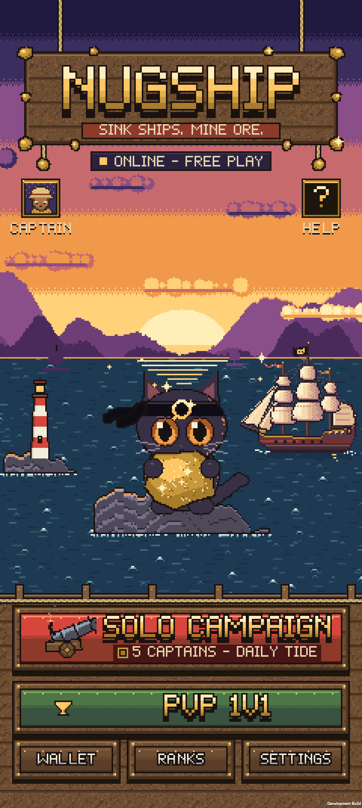
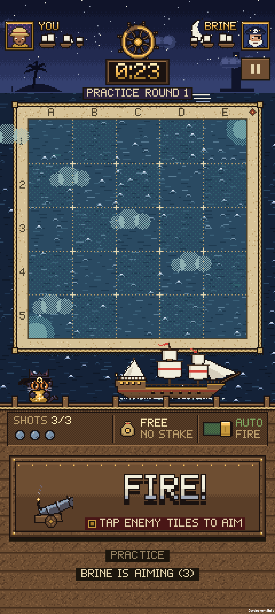
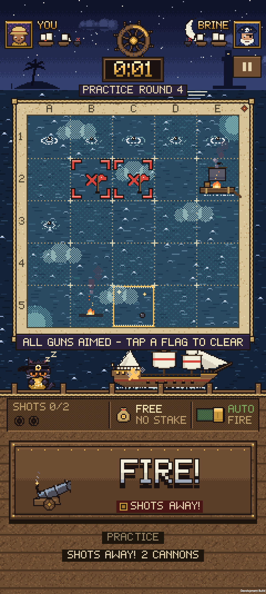
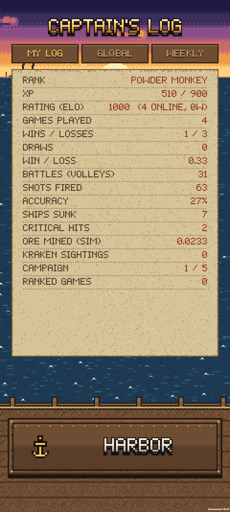
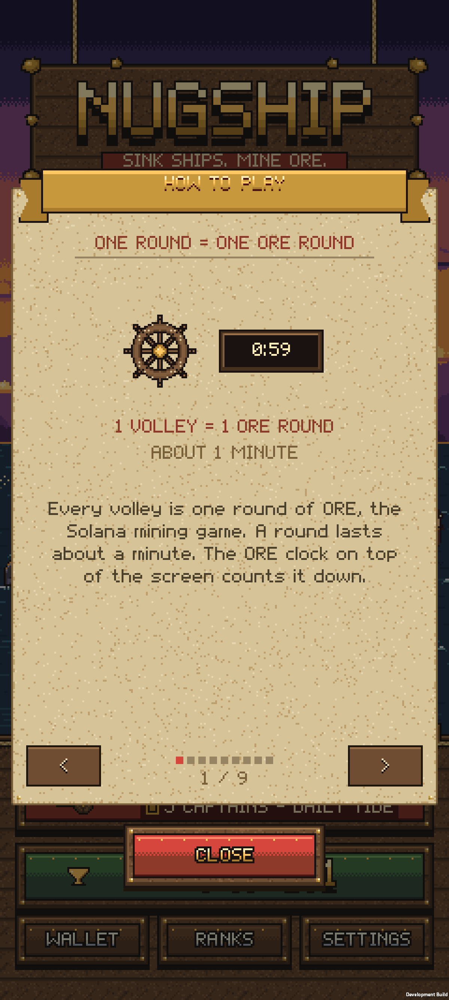
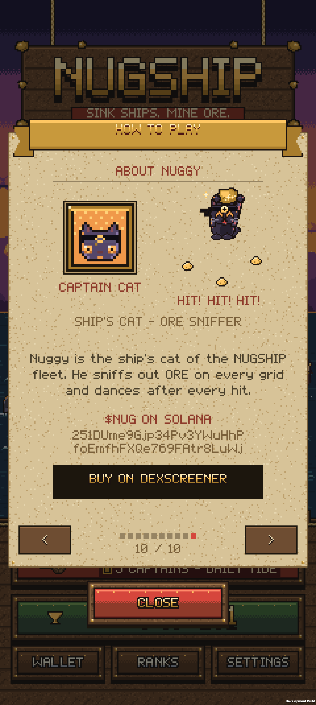

NUGSHIP
Sink ships. Mine ORE.
A portrait pixel-art naval duel built for the Solana Seeker. Hide your fleet on a 5×5 grid that mirrors ORE's mining board, fire salvos each live ORE round, and outgun AI captains or real players. Nuggy, the ship's cat, cheers every hit.
Watch the demo Source on GitHubScreens






Features
Solo campaign against 5 AI captains · Ranked 1v1 with Elo · Global and weekly leaderboards · Unlockable cosmetic fleets · Original chiptune score · Haptics
In the current version, ORE rounds are followed read-only and the app never signs or sends transactions. NUGSHIP is an independent game built on ORE and isn't affiliated with or endorsed by ORE or Solana Mobile.